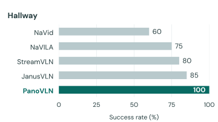
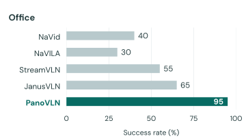
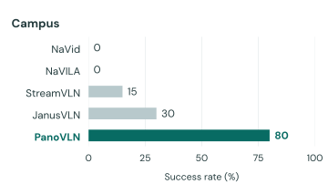

PanoVLN Ours
Full recordingReady
Towards Effective Panoramic Vision-and-Language Navigation
A full view of the surroundings.
Geometry-aware understanding.
Language, brought into motion.
One instruction. A continuous journey.
Turn right and go straight. There is a black storage rack against the wall. Walk up to the water dispenser beside the rack and stop.
Robot panorama and external camera. 2× playback.
Compare PanoVLN with four navigation baselines.
“Walk straight to the glass wall, then turn right and stop in front of the large TV set.”
Ready
Ready
Complete first-person recordings at their original resolution and frame rate. Both players use the selected speed; individual controls allow closer inspection.
PanoVLN combines panoramic visual semantics with geometry, then uses confidence to decide how much of a predicted action sequence to execute.

Current and historical panoramas share a fixed visual-token budget.
PanoVGGT enriches the visual tokens with geometry from RGB input.
The policy adapts how far it acts before observing and planning again.
Stronger navigation in unseen environments.
Continuous vision-and-language navigation on R2R-CE and RxR-CE Val-Unseen.
| Method | R2R SR ↑ | R2R SPL ↑ | RxR SR ↑ | RxR SPL ↑ |
|---|---|---|---|---|
| JanusVLN | 60.5 | 56.8 | 56.2 | 47.5 |
| DualVLN | 64.3 | 58.5 | 61.4 | 51.8 |
| CorrectNav† | 65.1 | 62.3 | 69.3 | 63.3 |
| AwareVLN | 65.4 | 55.1 | 67.6 | 56.1 |
| PanoVLN (Ours) | 77.3 | 70.6 | 78.0 | 65.9 |
Selected baselines; SR and SPL are percentages. PanoVLN uses panoramas; listed baselines use perspective RGB. † uses no navigation training data beyond R2R-CE and RxR-CE.
Success rate over 20 shared instruction–route pairs per environment, without scene-specific fine-tuning.



PanoVLN averages 86.4 seconds and 7.4 policy calls per trial in the shared robot evaluation setup.
Real-world evaluation in the paper| Method | Time (s) ↓ | Speed (cm/s) ↑ | Pauses ↓ | Calls ↓ |
|---|---|---|---|---|
| NaVid | 135.2 | 12.9 | 15.7 | 29.4 |
| NaVILA | 194.0 | 8.2 | 29.6 | 41.3 |
| StreamVLN | 117.8 | 13.3 | 8.3 | 34.3 |
| JanusVLN | 412.9 | 5.3 | 95.3 | 101.7 |
| PanoVLN (Ours) | 86.4 | 25.7 | 5.4 | 7.4 |
Trial averages. Time and speed include policy waiting. Pauses are stationary intervals longer than one second.
Everything you need to start exploring.
Set up the environment, run evaluation, or extend the panoramic navigation pipeline.
Get started on GitHubIf this project supports your research, please cite our work.
@misc{wang2026panovln,
title = {PanoVLN: Towards Effective Panoramic
Vision-and-Language Navigation},
author = {Zhen Wang and Changpeng Wang and Zhe Liu
and Zhangyang Qi and Yuxiang Lu and Zimo Zeng
and Donglian Qi and Xi Chen},
year = {2026},
url = {https://github.com/wangzhen-w/PanoVLN}
}